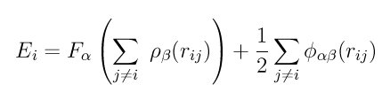

pair_style eam command¶
pair_style eam/cuda command¶
pair_style eam/gpu command¶
pair_style eam/kk command¶
pair_style eam/omp command¶
pair_style eam/opt command¶
pair_style eam/alloy command¶
pair_style eam/alloy/cuda command¶
pair_style eam/alloy/gpu command¶
pair_style eam/alloy/kk command¶
pair_style eam/alloy/omp command¶
pair_style eam/alloy/opt command¶
pair_style eam/cd command¶
pair_style eam/cd/omp command¶
pair_style eam/fs command¶
pair_style eam/fs/cuda command¶
pair_style eam/fs/gpu command¶
pair_style eam/fs/kk command¶
pair_style eam/fs/omp command¶
pair_style eam/fs/opt command¶
Examples¶
pair_style eam
pair_coeff * * cuu3
pair_coeff 1*3 1*3 niu3.eam
pair_style eam/alloy
pair_coeff * * ../potentials/NiAlH_jea.eam.alloy Ni Al Ni Ni
pair_style eam/cd
pair_coeff * * ../potentials/FeCr.cdeam Fe Cr
pair_style eam/fs
pair_coeff * * NiAlH_jea.eam.fs Ni Al Ni Ni
Description¶
Style eam computes pairwise interactions for metals and metal alloys using embedded-atom method (EAM) potentials (Daw). The total energy Ei of an atom I is given by
where F is the embedding energy which is a function of the atomic electron density rho, phi is a pair potential interaction, and alpha and beta are the element types of atoms I and J. The multi-body nature of the EAM potential is a result of the embedding energy term. Both summations in the formula are over all neighbors J of atom I within the cutoff distance.
The cutoff distance and the tabulated values of the functionals F, rho, and phi are listed in one or more files which are specified by the pair_coeff command. These are ASCII text files in a DYNAMO-style format which is described below. DYNAMO was the original serial EAM MD code, written by the EAM originators. Several DYNAMO potential files for different metals are included in the “potentials” directory of the LAMMPS distribution. All of these files are parameterized in terms of LAMMPS metal units.
Note
The eam style reads single-element EAM potentials in the DYNAMO funcfl format. Either single element or alloy systems can be modeled using multiple funcfl files and style eam. For the alloy case LAMMPS mixes the single-element potentials to produce alloy potentials, the same way that DYNAMO does. Alternatively, a single DYNAMO setfl file or Finnis/Sinclair EAM file can be used by LAMMPS to model alloy systems by invoking the eam/alloy or eam/cd or eam/fs styles as described below. These files require no mixing since they specify alloy interactions explicitly.
Note
Note that unlike for other potentials, cutoffs for EAM potentials are not set in the pair_style or pair_coeff command; they are specified in the EAM potential files themselves. Likewise, the EAM potential files list atomic masses; thus you do not need to use the mass command to specify them.
There are several WWW sites that distribute and document EAM potentials stored in DYNAMO or other formats:
http://www.ctcms.nist.gov/potentials
http://cst-www.nrl.navy.mil/ccm6/ap
http://enpub.fulton.asu.edu/cms/potentials/main/main.htm
These potentials should be usable with LAMMPS, though the alternate formats would need to be converted to the DYNAMO format used by LAMMPS and described on this page. The NIST site is maintained by Chandler Becker (cbecker at nist.gov) who is good resource for info on interatomic potentials and file formats.
For style eam, potential values are read from a file that is in the DYNAMO single-element funcfl format. If the DYNAMO file was created by a Fortran program, it cannot have “D” values in it for exponents. C only recognizes “e” or “E” for scientific notation.
Note that unlike for other potentials, cutoffs for EAM potentials are not set in the pair_style or pair_coeff command; they are specified in the EAM potential files themselves.
For style eam a potential file must be assigned to each I,I pair of atom types by using one or more pair_coeff commands, each with a single argument:
- filename
Thus the following command
pair_coeff *2 1*2 cuu3.eam
will read the cuu3 potential file and use the tabulated Cu values for F, phi, rho that it contains for type pairs 1,1 and 2,2 (type pairs 1,2 and 2,1 are ignored). See the pair_coeff doc page for alternate ways to specify the path for the potential file. In effect, this makes atom types 1 and 2 in LAMMPS be Cu atoms. Different single-element files can be assigned to different atom types to model an alloy system. The mixing to create alloy potentials for type pairs with I != J is done automatically the same way that the serial DYNAMO code originally did it; you do not need to specify coefficients for these type pairs.
Funcfl files in the potentials directory of the LAMMPS distribution have an ”.eam” suffix. A DYNAMO single-element funcfl file is formatted as follows:
- line 1: comment (ignored)
- line 2: atomic number, mass, lattice constant, lattice type (e.g. FCC)
- line 3: Nrho, drho, Nr, dr, cutoff
On line 2, all values but the mass are ignored by LAMMPS. The mass is in mass units, e.g. mass number or grams/mole for metal units. The cubic lattice constant is in Angstroms. On line 3, Nrho and Nr are the number of tabulated values in the subsequent arrays, drho and dr are the spacing in density and distance space for the values in those arrays, and the specified cutoff becomes the pairwise cutoff used by LAMMPS for the potential. The units of dr are Angstroms; I’m not sure of the units for drho - some measure of electron density.
Following the three header lines are three arrays of tabulated values:
- embedding function F(rho) (Nrho values)
- effective charge function Z(r) (Nr values)
- density function rho(r) (Nr values)
The values for each array can be listed as multiple values per line, so long as each array starts on a new line. For example, the individual Z(r) values are for r = 0,dr,2*dr, ... (Nr-1)*dr.
The units for the embedding function F are eV. The units for the density function rho are the same as for drho (see above, electron density). The units for the effective charge Z are “atomic charge” or sqrt(Hartree * Bohr-radii). For two interacting atoms i,j this is used by LAMMPS to compute the pair potential term in the EAM energy expression as r*phi, in units of eV-Angstroms, via the formula
r*phi = 27.2 * 0.529 * Zi * Zj
where 1 Hartree = 27.2 eV and 1 Bohr = 0.529 Angstroms.
Style eam/alloy computes pairwise interactions using the same formula as style eam. However the associated pair_coeff command reads a DYNAMO setfl file instead of a funcfl file. Setfl files can be used to model a single-element or alloy system. In the alloy case, as explained above, setfl files contain explicit tabulated values for alloy interactions. Thus they allow more generality than funcfl files for modeling alloys.
For style eam/alloy, potential values are read from a file that is in the DYNAMO multi-element setfl format, except that element names (Ni, Cu, etc) are added to one of the lines in the file. If the DYNAMO file was created by a Fortran program, it cannot have “D” values in it for exponents. C only recognizes “e” or “E” for scientific notation.
Only a single pair_coeff command is used with the eam/alloy style which specifies a DYNAMO setfl file, which contains information for M elements. These are mapped to LAMMPS atom types by specifying N additional arguments after the filename in the pair_coeff command, where N is the number of LAMMPS atom types:
- filename
- N element names = mapping of setfl elements to atom types
As an example, the potentials/NiAlH_jea.eam.alloy file is a setfl file which has tabulated EAM values for 3 elements and their alloy interactions: Ni, Al, and H. See the pair_coeff doc page for alternate ways to specify the path for the potential file. If your LAMMPS simulation has 4 atoms types and you want the 1st 3 to be Ni, and the 4th to be Al, you would use the following pair_coeff command:
pair_coeff * * NiAlH_jea.eam.alloy Ni Ni Ni Al
The 1st 2 arguments must be * * so as to span all LAMMPS atom types. The first three Ni arguments map LAMMPS atom types 1,2,3 to the Ni element in the setfl file. The final Al argument maps LAMMPS atom type 4 to the Al element in the setfl file. Note that there is no requirement that your simulation use all the elements specified by the setfl file.
If a mapping value is specified as NULL, the mapping is not performed. This can be used when an eam/alloy potential is used as part of the hybrid pair style. The NULL values are placeholders for atom types that will be used with other potentials.
Setfl files in the potentials directory of the LAMMPS distribution have an ”.eam.alloy” suffix. A DYNAMO multi-element setfl file is formatted as follows:
- lines 1,2,3 = comments (ignored)
- line 4: Nelements Element1 Element2 ... ElementN
- line 5: Nrho, drho, Nr, dr, cutoff
In a DYNAMO setfl file, line 4 only lists Nelements = the # of elements in the setfl file. For LAMMPS, the element name (Ni, Cu, etc) of each element must be added to the line, in the order the elements appear in the file.
The meaning and units of the values in line 5 is the same as for the funcfl file described above. Note that the cutoff (in Angstroms) is a global value, valid for all pairwise interactions for all element pairings.
Following the 5 header lines are Nelements sections, one for each element, each with the following format:
- line 1 = atomic number, mass, lattice constant, lattice type (e.g. FCC)
- embedding function F(rho) (Nrho values)
- density function rho(r) (Nr values)
As with the funcfl files, only the mass (in mass units, e.g. mass number or grams/mole for metal units) is used by LAMMPS from the 1st line. The cubic lattice constant is in Angstroms. The F and rho arrays are unique to a single element and have the same format and units as in a funcfl file.
Following the Nelements sections, Nr values for each pair potential phi(r) array are listed for all i,j element pairs in the same format as other arrays. Since these interactions are symmetric (i,j = j,i) only phi arrays with i >= j are listed, in the following order: i,j = (1,1), (2,1), (2,2), (3,1), (3,2), (3,3), (4,1), ..., (Nelements, Nelements). Unlike the effective charge array Z(r) in funcfl files, the tabulated values for each phi function are listed in setfl files directly as r*phi (in units of eV-Angstroms), since they are for atom pairs.
Style eam/cd is similar to the eam/alloy style, except that it computes alloy pairwise interactions using the concentration-dependent embedded-atom method (CD-EAM). This model can reproduce the enthalpy of mixing of alloys over the full composition range, as described in (Stukowski).
The pair_coeff command is specified the same as for the eam/alloy style. However the DYNAMO setfl file must has two lines added to it, at the end of the file:
- line 1: Comment line (ignored)
- line 2: N Coefficient0 Coefficient1 ... CoeffincientN
The last line begins with the degree N of the polynomial function h(x) that modifies the cross interaction between A and B elements. Then N+1 coefficients for the terms of the polynomial are then listed.
Modified EAM setfl files used with the eam/cd style must contain exactly two elements, i.e. in the current implementation the eam/cd style only supports binary alloys. The first and second elements in the input EAM file are always taken as the A and B species.
CD-EAM files in the potentials directory of the LAMMPS distribution have a ”.cdeam” suffix.
Style eam/fs computes pairwise interactions for metals and metal alloys using a generalized form of EAM potentials due to Finnis and Sinclair (Finnis). The total energy Ei of an atom I is given by

This has the same form as the EAM formula above, except that rho is now a functional specific to the atomic types of both atoms I and J, so that different elements can contribute differently to the total electron density at an atomic site depending on the identity of the element at that atomic site.
The associated pair_coeff command for style eam/fs reads a DYNAMO setfl file that has been extended to include additional rho_alpha_beta arrays of tabulated values. A discussion of how FS EAM differs from conventional EAM alloy potentials is given in (Ackland1). An example of such a potential is the same author’s Fe-P FS potential (Ackland2). Note that while FS potentials always specify the embedding energy with a square root dependence on the total density, the implementation in LAMMPS does not require that; the user can tabulate any functional form desired in the FS potential files.
For style eam/fs, the form of the pair_coeff command is exactly the same as for style eam/alloy, e.g.
pair_coeff * * NiAlH_jea.eam.fs Ni Ni Ni Al
where there are N additional arguments after the filename, where N is the number of LAMMPS atom types. See the pair_coeff doc page for alternate ways to specify the path for the potential file. The N values determine the mapping of LAMMPS atom types to EAM elements in the file, as described above for style eam/alloy. As with eam/alloy, if a mapping value is NULL, the mapping is not performed. This can be used when an eam/fs potential is used as part of the hybrid pair style. The NULL values are used as placeholders for atom types that will be used with other potentials.
FS EAM files include more information than the DYNAMO setfl format files read by eam/alloy, in that i,j density functionals for all pairs of elements are included as needed by the Finnis/Sinclair formulation of the EAM.
FS EAM files in the potentials directory of the LAMMPS distribution have an ”.eam.fs” suffix. They are formatted as follows:
- lines 1,2,3 = comments (ignored)
- line 4: Nelements Element1 Element2 ... ElementN
- line 5: Nrho, drho, Nr, dr, cutoff
The 5-line header section is identical to an EAM setfl file.
Following the header are Nelements sections, one for each element I, each with the following format:
- line 1 = atomic number, mass, lattice constant, lattice type (e.g. FCC)
- embedding function F(rho) (Nrho values)
- density function rho(r) for element I at element 1 (Nr values)
- density function rho(r) for element I at element 2
- ...
- density function rho(r) for element I at element Nelement
The units of these quantities in line 1 are the same as for setfl files. Note that the rho(r) arrays in Finnis/Sinclair can be asymmetric (i,j != j,i) so there are Nelements^2 of them listed in the file.
Following the Nelements sections, Nr values for each pair potential phi(r) array are listed in the same manner (r*phi, units of eV-Angstroms) as in EAM setfl files. Note that in Finnis/Sinclair, the phi(r) arrays are still symmetric, so only phi arrays for i >= j are listed.
Styles with a cuda, gpu, intel, kk, omp, or opt suffix are functionally the same as the corresponding style without the suffix. They have been optimized to run faster, depending on your available hardware, as discussed in Section_accelerate of the manual. The accelerated styles take the same arguments and should produce the same results, except for round-off and precision issues.
These accelerated styles are part of the USER-CUDA, GPU, USER-INTEL, KOKKOS, USER-OMP and OPT packages, respectively. They are only enabled if LAMMPS was built with those packages. See the Making LAMMPS section for more info.
You can specify the accelerated styles explicitly in your input script by including their suffix, or you can use the -suffix command-line switch when you invoke LAMMPS, or you can use the suffix command in your input script.
See Section_accerlate of the manual for more instructions on how to use the accelerated styles effectively.
Mixing, shift, table, tail correction, restart, rRESPA info:
For atom type pairs I,J and I != J, where types I and J correspond to two different element types, mixing is performed by LAMMPS as described above with the individual styles. You never need to specify a pair_coeff command with I != J arguments for the eam styles.
This pair style does not support the pair_modify shift, table, and tail options.
The eam pair styles do not write their information to binary restart files, since it is stored in tabulated potential files. Thus, you need to re-specify the pair_style and pair_coeff commands in an input script that reads a restart file.
The eam pair styles can only be used via the pair keyword of the run_style respa command. They do not support the inner, middle, outer keywords.
Restrictions¶
All of these styles except the eam/cd style are part of the MANYBODY package. They are only enabled if LAMMPS was built with that package (which it is by default). See the Making LAMMPS section for more info.
The eam/cd style is part of the USER-MISC package and also requires the MANYBODY package. It is only enabled if LAMMPS was built with those packages. See the Making LAMMPS section for more info.